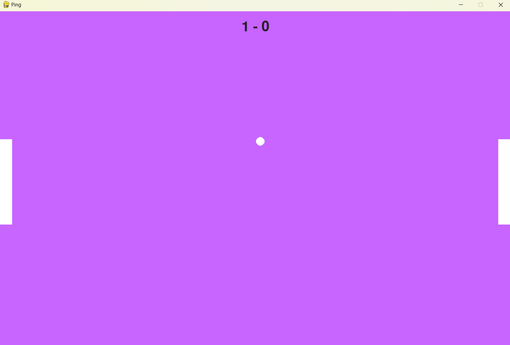
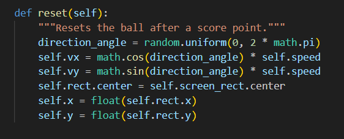
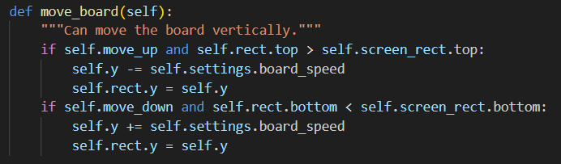
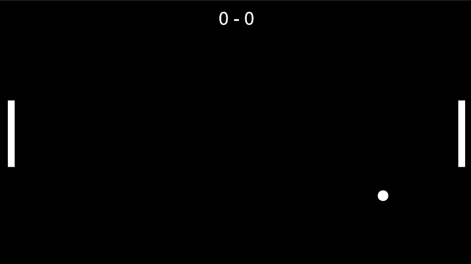

Making Pong using Pygame and Unity
24 Jun 2024
A few days ago I started using Pygame to make Pong, just a basic version. Things that I included follow:
- Two paddles to hit, 2 players game
- To make the ball go in some random direction
- To handle collision with walls and paddles
- Making the score and displaying it
Starting to prepare the game, the above things are those that I have planned and I think they are the basic building blocks for this. Also thought to add a CPU player instead of 2 players but this is the first version that I have thought about. Made a separate folder for the game. Since I am writing this after completing the game (basic version), I will be showing all the different files that I have made in the process. If you are starting this out just don't freak out, you'll figure it out. The files include for the ball, paddles, buttons, the main game, scoreboard, settings and for all the different functions. One thing you see is the color of the game window which is chosen at random at the beginning and I have kept it the same till now.
Paddles
The basic window is setup in pygame using init() and set_mode() and also setting caption. Using time to set the frame rate to 60 which will prevent the CPU from doing over work. The first thing is to make the two paddles which can be controlled by using the keyboard. There is no CPU here to consider so it's pretty faster (in terms of making). Another separate file is made for the paddle like a class, I named it board in the files so not to confuse. Using Rect of pygame making a rect when called, with an input parameter like "left" or "right" will be given to the class to make the board at either the left end or right end. Once completing making the two boards in the main file which is named pong.py, we listen to events using the pygame.event.get(). W S are set to the left player as Up and Down and arrow keys for right player. This is simple comparing to the other 3 parts of the game.
One thing I want to mention when doing this type of projects is naming of the things, I am getting used to name them very clearly. Another thing to do is refactoring the code after every single small part (not every step. I did it like after every single steps of the 4 steps as stated above). I have also heard that functions we use should have just one work and only one. Once code is written and after some time we think to add a feature then we should not remove the existing one but add to it. Must be able to add features without removing the code but adding it.
Making the Ball
Made a similar class to ball. The issue that faced here was to make the ball go in some random direction. I tried to assign random values between -5 and 5 for x-velocity and y-velocity. I thought this would make it work but I found a better solution for this in the internet. Keeping the speed as 10 or so. Choosing an angle between 0 and 360 and producing the sin and cos components of the speed and assigning it to velocities. This made things easier but sometimes unpredictable like when angle is between 0 and 20 wrt vertical axis, it takes longer time for the ball to reach the paddle. I have still not resolved the issue.
Collisions
Coming to the 3rd step of this is making the collisions. I used colliderect of pygame to implement this. Although I tried to make my own collide detection system, I found it easier to use pygame in-built function. As soon as the ball hits the wall I flip the y-component of velocity and when it hits the paddle I flipped the x component of the velocity. If it hits the leftmost or rightmost side, the game is brought into reset state and the ball again comes in random direction. I still have some loose bugs where this collisions does not work perfectly. You will occasionally notice them while playing the game. I still cannot fix them and if you could help then please mail me.
Displaying Scores
The last part of the game is to make score and displaying it. I used pygame again, to render the score and I kept the winning score to be 11. Also made the play button class to start the game when play button is clicked. After one player wins the play button is shown again. Though the game seems to work most of the time as intended, apart from the bugs, the game seems repetitive after sometime. I tried increasing the speed after the ball hit either of the paddle but still the game seems to be predictable and I know it should not seem so. I am thinking on ways to improve it.
Making in Unity
Before I started this I knew nothing about Unity other than navigating through it. I learnt the basics of c# and then I thought that was enough to learn and use Unity but I was wrong. The first thing to know is that Unity is a framework. Well, what do I mean by that? The answer to this question came to me when I started implementing the same logic that I used to make Pong in Pygame. It is the control flow. I will not be incharge of the flow of control in Unity but in Pygame, I have to do that on my own. It's like I tell an object in game to do something and that's it. I don't need to worry about the nuances about managing how to make them work in order. Well both Unity and Pygame both have their pros and cons, I learnt different things while making the same game in both.
Since I made the same game the goals in both are same. Those 4 points. It went like this, I made paddles and attached a script to control it using keyboard. And as in Pygame made the ball go in random direction. I made use of the collisions of rigidbody in Unity. Hey, I am telling I made this and that but still works the same as in Pygame. The difference that I want to tell is that for example, while every game loop I had to check for collision in pygame but that is not the case in Unity, there is this thing called OnCollisionEnter2D which just start when there is a collision and I linked it to the ball. I am not telling about Unity because that is whole another thing to tell. There is another thing called Action in Unity which does the same thing not running everytime but on when it happens. Few of the issues I faced were using Unity itself like understanding it's flow. I could make the same logic I did in pygame but there are other better ways to do, so it took some time to learn them.
If you want to provide your valuable insights regarding the code, link is given below to access the files. I would greatly appreciate if you provide your feedback. I am still working on comments thing, you can also suggest me regarding that also. My email is given below. But for now I will update the comments manually from html since that is what I know now.